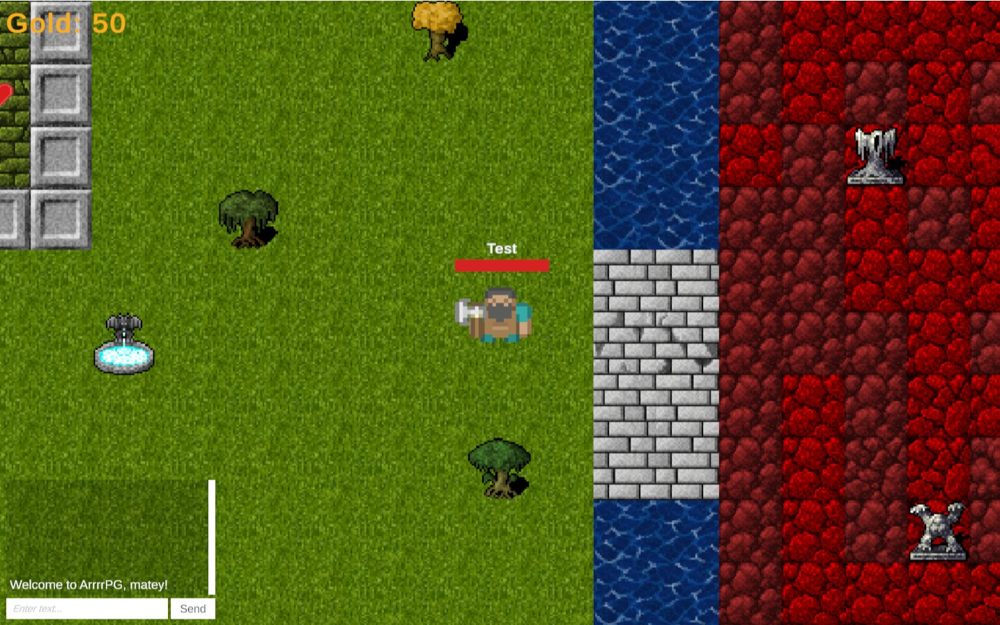

RPG Multiplayer
RPG Multiplayer is a top-down online action RPG built in Unity using Photon PUN 2. Players explore a shared tile-based world, fight networked enemies, collect gold and health pickups, and respawn after death while keeping their progress in the session.
The project focuses on building a complete multiplayer loop: lobby and room management, synchronized player spawning and movement, networked combat and AI, and shared UI such as nameplates, health bars, and an in-game chat box that broadcasts messages to all players.
Show Project Instructions (PDF)
Key systems implemented for RPG Multiplayer:
- Photon PUN 2 networking with master server connection, lobby, and room browser.
- Top-down RPG controller with WASD movement, melee attacks toward the mouse, and respawn logic.
- Networked enemies driven by the host, including chase, attack, damage, and death with loot spawns.
- Gold and health pickups that use RPCs to update player stats and on-screen UI across all clients.
- World-space header UI showing player and enemy names plus synced health bars.
- In-game chat box with scrollable message log and synchronized chat messages between players.
